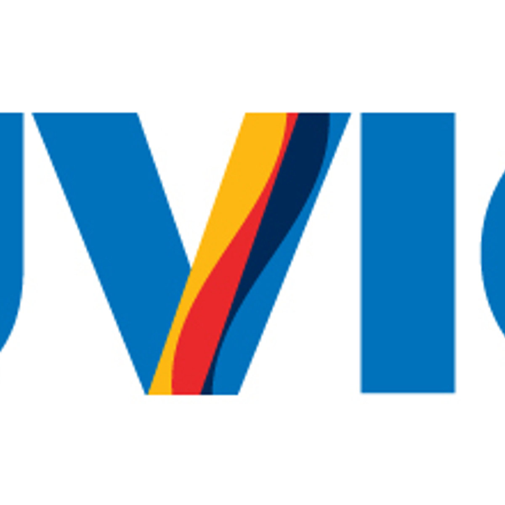

Tech Fest Organizers

Simon Fraser University
- Sheelagh Carpendale
- Narges Ashtari
Tech Fest coordinator & website designer - Nastaran Sedehi
Tech Fest coordinator, graphics & website designer
University of Victoria
- Charles Perin
- Wei Wei
Tech Fest coordinator - Sarian Kashanji